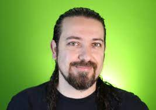

Indicações
Para começar nessa jornada é necessário que tenhamos claras as motivações que nos levaram a diminuir o consumo de produtos de origem animal, e documentários, canais do youtube e até mesmo filmes podem nos manter informados e motivados nessa jornada.
🎬 Filmes e documentários
Okja
Filme
Okja é um filme sul-coreano-americano de 2017 dirigido por Bong Joon-ho e co-escrito por Bong e Jon Ronson. A história gira em torno de Mikha e sua amiga Okja, uma espécie de superporco. Após 10 anos de convivência Mikha descobre que Okja faz parte de uma grande competição pela carne de melhor qualidade, onde os animais foram criados em laboratórios com o único objetivo de serem abatidos um dia. A partir desta realidade a menina faz de tudo para proteger a vida de Okja.
Cowspiracy - O segredo da sustentabilidade
Documentário
Cowspiracy foi produzido por Kip Andersen e Keegan Kuhn, em 2014. A história começa com o diretor Kip Andersen contando a sua história de envolvimento com a causa ambientalista. Ele começou a se preocupar com os danos causados ao meio ambiente mudou hábitos em sua rotina, tomando banhos mais curtos, substituindo o carro por alternativas mais sustentáveis e coisas afins. Foi quando ele descobriu os impactos da indústria agropecuária no meio ambiente e como grandes organizações tem medo de tocar nesse assunto.
Terráqueos - Faça a conexão
Documentário
Lançado em 2005, Terráqueos é um documentário escrito, dirigido e produzido pelo ambientalista estadunidense Shaun Monson. Pesado e chocante, o filme apresenta a realidade por trás da produção de carnes, laticínios, roupas e calçados. Também traz informações e imagens impactantes sobre espécies usadas como entretenimento e cobaias em laboratórios farmacêuticos e da indústria da beleza.
🎥 Canais no Youtube

Fábio Chaves
Fábio Chaves é um ativista vegano e criador do portal Vista-se, em seu canal no youtube ele aborda as principais notícias do mundo sobre o veganismo e a exploração animal, além de fazer analises sobre produtos no quadro "É vegano ou não é?", lendo a composição dos produtos e desmistificando vários ingredientes com nomes desconhecidos.
Tá na Mesa Vegg
Maria Antônia e Flávia Zardo são veganas e no Tá na Mesa Vegg trazem receitas de comidas que nos dão aquela memória afetiva como bolo de fubá, coxinha, carne de panela, entre tantas outras que são uma delícia e não possuem nenhum sofrimento animal.
Tá Querida - Luiza Junqueira
No canal Tá Querida Luiza Junqueira fala sobre diversas questões como corpo, autoestima, empoderamento feminino e traz várias receitas vegetarianas/veganas maravilhosas para ajudar quem assim como ela quer diminuir o consumo de carne e outros derivados de animais no dia a dia